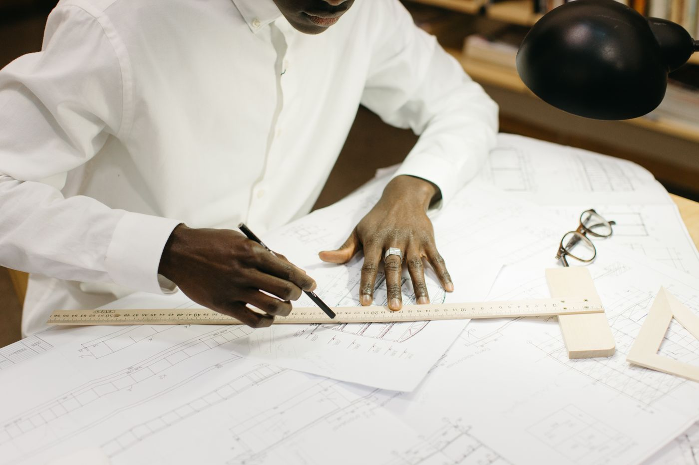
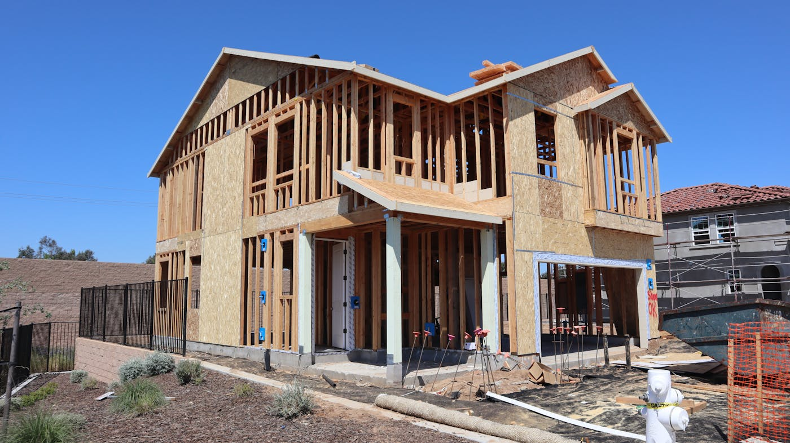

Quick answer: A builders report (building inspection report) for a standard Sydney residential property costs $400–$750 in 2026, depending on property size, age, and whether a pest inspection is included. A combined building-and-pest report runs $550–$850 for most metropolitan Sydney homes. The on-site inspection takes 2–4 hours; the written report is delivered within 24–48 hours. All building inspectors in NSW must hold a contractor licence from NSW Fair Trading — verifiable online before you book.
Buying a property without a builders report is one of those decisions that feels perfectly reasonable right up until the structural engineer arrives. The money saved — $400 to $600, typically — has a way of looking different in the context of a $30,000 drainage remediation or an asbestos removal quote.
[Right. Straight face now.] Here is what a builders report actually costs in Sydney in 2026, what drives the price in either direction, what the report does and does not cover, and a question the standard guides rarely get to: when does a builders report matter for someone planning to build a new home rather than buy an old one?
- What is a builders report?
- How much does a builders report cost in Sydney?
- What factors affect the price?
- What does a builders report include?
- Building and pest inspection: combined vs separate
- Builders reports before a knockdown rebuild
- Construction stage inspections for new builds
- How to find a licensed building inspector in NSW
- When NOT to skip a builders report
- Six questions to ask your building inspector
- FAQ
What Is a Builders Report?
A builders report is a visual inspection of a residential property conducted by a licensed building inspector. The inspector examines the structure, roof, subfloor, walls, ceilings, and visible services, then documents any defects, safety hazards, or maintenance items observed.
The report is most commonly ordered by buyers before exchanging contracts on an existing property. It is not a compliance check or a structural engineering assessment — it is a documented visual inspection that gives buyers factual grounds for negotiating the price, requesting repairs, or withdrawing from a purchase.
In NSW, building inspectors operate under a contractor licence issued by NSW Fair Trading. The inspection is not legally mandatory, but omitting it on an older Sydney property — particularly any pre-1990 construction — removes information that is difficult to recover once you have exchanged contracts.
How Much Does a Builders Report Cost in Sydney?
Sydney metropolitan rates in 2026, by property type:
| Property Type | Building Inspection Only | Combined Building + Pest |
|---|---|---|
| Apartment or unit (1–2 bed) | $300 – $450 | $450 – $600 |
| House (2–3 bedroom) | $400 – $600 | $550 – $750 |
| House (4–5 bedroom) | $500 – $750 | $650 – $900 |
| Large property or acreage | $650 – $950 | $800 – $1,100 |
Properties in outer western suburbs — Penrith, Richmond, the Hills District — tend to sit at the lower end of these ranges. Inner-eastern and northern suburbs — Mosman, Paddington, Hunters Hill — sit at the upper end, reflecting both travel time from the inspector’s base and the complexity that comes with heritage overlays and older construction.
A same-day report for an auction purchase carries a premium of $50–$100 over standard rates. This is worth paying if you are bidding at auction, where 24–48 hour turnaround is too slow.
What Factors Affect the Price?
Property size and floor area
Larger homes take longer to inspect. A four-bedroom home on a 700m² lot requires significantly more inspection time than a two-bedroom unit. Most inspectors price by property type or estimated floor area rather than an hourly rate — which is why the quote you receive upfront is usually fixed, not variable.
Age of the property
Older properties require more detailed inspection. Pre-1990 construction in Sydney has more to examine: original roof sheeting, subfloor pier conditions, original electrical configurations, and wet areas that have been through multiple renovation cycles. Inspectors price this complexity into their fees because the inspection genuinely takes longer and the risk of missing something is higher.
Suspected asbestos-containing materials
A building inspection notes the presence of suspected asbestos-containing materials (ACM) but does not test or remove them. For properties with visible fibrous cement sheeting, eave linings, or original wet area linings, a separate asbestos assessment costs $300–$600 if a detailed survey with sampling is required. This is additional to the builders report fee and is commissioned separately from a licensed asbestos assessor.
Site access conditions
A sealed subfloor, inaccessible roof void, or locked outbuilding limits what the inspector can observe. Inspection reports note access limitations clearly — which is useful information in itself, since an inaccessible subfloor on a pre-1990 property is worth understanding before you commit.

Photo via Pexels
What Does a Builders Report Include?
A standard NSW building inspection report covers the following elements of a residential property:
- Roof exterior — condition of tiles, metal sheeting, gutters, and flashing
- Visible interior roof structure — rafters, trusses, sarking where accessible
- External walls, cladding, windows, and doors
- Subfloor — piers, stumps, bearers, and drainage conditions where accessible
- Internal ceilings and wall linings
- Bathrooms and wet areas — tiling, waterproofing integrity, fixtures
- Drainage — visible downpipes, stormwater connections, surface runoff
- Electrical switchboard — visual observation only, not compliance testing
- Garages, carports, and outbuildings
- Stairs and balustrades — safety compliance
- Overall structural condition of the dwelling
What the report does not include:
- Compliance certification or construction certificate
- Structural engineering assessment or geotechnical report
- Asbestos testing beyond notation of suspected ACM
- Pest inspection — unless a combined report is ordered
- Swimming pool compliance inspection — a separate certificate under NSW law
- Strata records or building management reports for apartments
Professional inspectors follow Australian Standard AS 4349.1–2007 for residential building inspections. Ask explicitly whether the report conforms to this standard.

Photo via Pexels
Building and Pest Inspection: Combined vs Separate
The combined building-and-pest inspection is the standard approach for most property purchases in Sydney. The same inspector or a paired team conducts both inspections — structural defects and timber pest activity — in a single visit.
Cost comparison in Sydney (2026):
| Inspection Type | Typical Cost (standard house) |
|---|---|
| Building inspection only | $400 – $600 |
| Pest inspection only | $200 – $350 |
| Both ordered separately | $600 – $950 |
| Combined report (single provider) | $550 – $850 |
Ordering combined saves $50–$150 compared to separate reports, because the inspector completes both in a single site visit. Most buyers’ advocates in Sydney recommend the combined report for any property over 15 years old.
For newer apartments or strata properties under 10 years old, a strata report and standard building inspection may be more relevant than a combined pest inspection. Strata records — obtained separately through a strata search company — reveal building defect funds, maintenance plans, and outstanding levies that the building inspection does not cover.
Builders Reports Before a Knockdown Rebuild
This is the angle most builders report guides skip entirely. For a client planning a knockdown rebuild rather than a renovation, the builders report serves a different purpose — and is just as important.
If you plan to demolish an existing home and build from scratch, you might assume the inspection is irrelevant. The building is coming down anyway. This assumption is worth examining.
What a pre-demolition builders report does for knockdown rebuild clients:
- Identifies asbestos-containing materials — which determines demolition method and cost. Full asbestos removal on a pre-1990 Sydney home typically costs $15,000–$45,000. This is a variable you need in your feasibility before site purchase, not after demolition quotes arrive.
- Documents existing drainage locations — sewer connections, stormwater outlets, and inspection points that will affect your new build’s service connections and DA conditions.
- Records party wall and boundary conditions — encroachments, retaining walls, and shared structures that affect your design footprint and potential disputes during demolition.
- Confirms the status of existing structures — unauthorised additions require disclosure and may need retrospective approval or documentation before demolition proceeds. A builders report surfaces these before they become a problem with council.
For anyone deciding between renovation and knockdown rebuild on a Hills District or inner-western Sydney property, the builders report is often the document that makes the decision clear. The cost to renovate a home with significant ACM, original electrical, and unauthorised extensions frequently approaches the cost of a new build — without the outcome. See our guide to knockdown rebuild in Carlingford for how this analysis plays out on a typical 1970s block.

Photo via Pexels
Construction Stage Inspections for New Builds
A builders report covers existing properties. Clients building a new custom home work with a different inspection framework — construction stage inspections, conducted by both the principal certifier and, optionally, an independent inspector engaged by the owner.
Typical costs for independent construction stage inspections in Sydney (2026):
| Inspection Stage | Typical Cost |
|---|---|
| Frame stage inspection | $300 – $450 |
| Pre-plaster inspection | $250 – $400 |
| Waterproofing inspection | $200 – $350 |
| Lock-up stage inspection | $300 – $450 |
| Practical completion inspection | $400 –$600 |
A full suite of independent inspections across all stages costs $1,200–$2,000 on a standard residential build. On a custom home at $1.5M or above, this represents a fraction of a percent of the project value and is among the most cost-effective quality assurance an owner can commission.
The principal certifier (PC) appointed to your build conducts mandatory inspections at statutory hold points. These inspections are required by law and are included in the PC’s fee. Independent inspections are additional — commissioned separately by the owner, with the inspector’s duty of care running directly to you rather than to the certifier or builder.
The practical completion inspection is worth particular attention. Defects identified before handover are addressed at the builder’s cost under the contract. The same defects identified six months after handover are addressed through the statutory warranty process — slower and more contested. See our full guide to building a new home in Sydney for more on the construction process and what independent inspections cover at each stage.
How to Find a Licensed Building Inspector in NSW
NSW requires building inspectors to hold a contractor licence for the relevant category of residential building work. Verify any inspector’s licence on the NSW Fair Trading licence register before booking. The licence should be current and should list the appropriate work category.
Beyond the licence, look for:
- Professional indemnity insurance — a PI policy of at least $1M per claim is standard. Ask for the certificate of currency, not just confirmation that one exists.
- Public liability insurance — covers physical damage or injury during the inspection. Minimum $10M is typical.
- Membership of a professional body — the Australian Institute of Building Surveyors (AIBS) or Master Inspectors group signal professional accountability.
- Independence from all parties to the transaction — the inspector should have no relationship with the vendor, real estate agent, or anyone with an interest in the sale proceeding.
A building inspector who hesitates on the PI insurance question is, in a way, also providing information. The inspector’s confidence in their work is reflected directly in whether they carry adequate cover for it.
For the broader question of choosing the right professionals at the start of a build project, our guide to how to choose a custom home builder covers what credentials and insurance to verify before signing a building contract.
When NOT to Skip a Builders Report
This section is the one most guides leave implicit. It should be explicit.
Do not skip a builders report on:
- Any property built before 1990 in Sydney — asbestos risk, original wiring, and original plumbing are present more often than buyers expect until they see the inspection report
- Any property with visible renovations that lack obvious permit evidence — unauthorised work creates liability for the buyer
- Properties with a known water damage or flooding history — mould, timber rot, and structural deterioration are not always visible without a trained inspection
- Flood-affected or flood-prone lots — subfloor conditions and drainage are specifically relevant
- Auction purchases in NSW — reports must be commissioned before auction day; after the fall of the hammer, your right to a cooling-off period does not apply
- Any property where you plan a knockdown rebuild — for the asbestos and drainage reasons covered above
You can reasonably skip a builders report on a newly completed property under builder’s warranty where stage inspections have been documented throughout construction and the builder holds current home building compensation (HBC) insurance. A practical completion inspection before handover is still worth the $400–$600, but the risk profile of a new build is fundamentally different from a 1980s Sydney brick veneer.
For more on the approvals and compliance framework that governs new residential construction in NSW, the NSW Planning Portal is the authoritative source.
Six Questions to Ask Your Building Inspector
Ask these before you book, not after the report arrives with a gap in it.
- Are you licensed by NSW Fair Trading for residential building inspections? Ask for the licence number and verify it on the register before the appointment is confirmed. A licence in an individual’s name rather than the company’s name — and the distinction matters for insurance purposes.
- Do you hold current professional indemnity insurance, and can you provide a certificate of currency? Minimum $1M per claim is the professional standard. If you receive a certificate dated from a previous policy year, the current cover may have lapsed.
- What will the inspection cover, and are there likely access limitations on this property? An experienced inspector can often anticipate access issues from the listing description or property age. An honest answer here tells you more about the inspector than the property.
- Does the report conform to Australian Standard AS 4349.1–2007? Professional inspectors reference this standard. Reports that do not conform to it may be less comprehensive in scope and structure — which matters if you need to rely on the report in a dispute.
- What is the turnaround time, and is same-day delivery available? Standard turnaround is 24–48 hours. For an auction property, same-day delivery is available from most experienced inspectors at a small premium — and is worth paying.
- Do you have any professional relationship with the vendor, agent, or any party to this transaction? Independence is non-negotiable. This question takes thirty seconds to ask. If the answer causes hesitation, that is the answer.
Six questions. For a purchase that may be your largest single financial transaction, none of them are unreasonable. If you are also at the stage of selecting a builder for a new home on the site, the same instinct for verified credentials applies — speak to the TURYN team about what due diligence looks like before a custom home contract is signed.
FAQ
What is included in a builders report in NSW?
A standard builders report in NSW covers a visual inspection of the property’s structure: roof, walls, floors, ceilings, subfloor (where accessible), doors, windows, wet areas, drainage, and the visible electrical switchboard. The report documents defects, maintenance items, and safety hazards. It does not include compliance certification, structural engineering assessment, pest inspection, asbestos testing, or strata records.
How long does a builders report take to complete?
The on-site inspection takes 2–4 hours for a standard residential property, depending on size and site access. The written report is delivered within 24–48 hours of the inspection. Same-day delivery is available from most Sydney inspectors for auction purchases, typically at a premium of $50–$100 over standard rates.
Who pays for a building inspection report when buying a house?
The buyer commissions and pays for the building inspection report. It is not legally required under NSW law, but most buyers’ advocates and conveyancers strongly recommend it for any property over 10–15 years old. In some negotiated purchases, the cost is factored into the final price reduction when significant defects are found — making the report one of the better-returning $500 investments in the purchase process.
Is a building inspection worth the cost in Sydney?
On any pre-1990 property or any property with visible alterations, yes. The cost ($400–$750 for most Sydney homes) is modest relative to the potential cost of undisclosed defects — asbestos removal, drainage remediation, or structural repairs. On a $1.5M Sydney property, a $500 inspection that surfaces a $30,000 drainage problem is not an expense. It is arithmetic.
Can I use a builders report from a previous sale?
Vendors sometimes provide a pre-purchase report commissioned on their behalf in NSW. These may be factually accurate, but the inspector’s legal duty of care runs to the person who commissioned the report, not to subsequent buyers. If you rely on a vendor-supplied report and defects are missed, your recourse against the inspector is limited. A report commissioned in your own name costs the same and removes that ambiguity entirely.
Do new homes need a building inspection?
New homes under construction have mandatory inspections by the principal certifier at statutory hold points. An independent practical completion inspection by a licensed building inspector before handover is additional and is recommended. Defects found before handover are the builder’s responsibility under the contract — the same defects found six months later are addressed through the statutory warranty process, which is slower and more contested. Independent inspections at practical completion cost $400–$600 and have identified defects worth $5,000–$50,000 on residential builds across Sydney.
What is the difference between a building inspection and a pest inspection?
A building inspection covers structural and maintenance defects in the property. A pest inspection looks specifically for evidence of termites, wood borers, and wood rot. These are separate disciplines requiring different training and equipment. Most Sydney buyers order both in a combined report from a single provider, which costs less than ordering separately and involves a single site visit. For any property over 15 years old, both inspections are advisable.
How do I check if a building inspector is licensed in NSW?
Search the NSW Fair Trading licence register before booking. Enter the inspector’s name or licence number and confirm the licence is current and covers the relevant work category. Also confirm they hold current professional indemnity insurance — a valid licence without active PI cover is incomplete protection for the buyer.